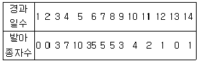

임업종묘기능사 (2007-04-01 기출문제)
1과목: 임의 구분
1. 꽃가루와 배주가 정상적으로 온전하여도 같은 종류의 인자를 가진 개체사이에서 화분관의 신장을 억제하는 물질을 분비하여 수정을 방해하는 현상은?
- 꽃가루 붙임성
- 위치적붙임성
- 자가불화합성
- 수술붙임성
(정답률: 91%)

2. 열매 및 종자구조는 과피(씨방벽), 배(씨눈), 배유(씨젖), 주심(내종피), 주피(씨껍질) 등으로 구성되어 있다. 바깥쪽에서 안쪽으로 배치되는 순서가 옳은 것은?
- 과피 - 주피 - 배유 - 주심 - 배
- 주피 - 과피 - 배유 - 주심 - 배
- 과피 - 주피 - 주심 - 배유 - 배
- 주피 - 과피 - 주심 - 배유 - 배
(정답률: 66%)
3. A×B 를 교잡시킬 때 부(父)쪽은 어느 것인가?
- A
- B
- A 또는 B
- A, B 모두 아니다
(정답률: 80%)
4. 다음 중 질적 형질에 해당하는 것은?
- 화색
- 수고
- 직경
- 생장량
(정답률: 87%)
5. 표현형이 탁월하나 유전력은 아직 검증되지 않은 것은?
- 모수
- 수형목
- 채종목
- 정형목
(정답률: 75%)
6. AA×aa에서 생긴 잡종Aa는?
- 단성잡종
- 양성잡종
- 3성잡종
- 다성잡종
(정답률: 66%)
7. 소나무 구과의 한개 인편(실편)당 종자수는?
- 1개
- 2개
- 3개
- 4개
(정답률: 72%)
8. 다음 중 4배체에 대한 설명으로 가장 옳은 것은?
- 생장이 4배나 빠른 나무이다.
- 꽃의 크기가 보통 것 보다 4개 크다.
- 염색체 수가 보통의 4배가 된다.
- 염색체 크기가 보통의 4배가 된다.
(정답률: 90%)
9. 다음 밤나무 품종 중 도입품종이 아닌 것은?
- 축파
- 은기
- 이평
- 옥광
(정답률: 81%)
10. 콜히친(colchicine)은 무엇인가?
- 살충제
- 생장조절제
- 발근촉진제
- 돌연변이 유발물질
(정답률: 71%)
11. 우리나라에 식재되어 있는 낙엽송은?
- 일본에서 도입한 수종이다.
- 우리나라에서 교잡육종한 수종이다.
- 우리나라에서 선발육종한 수종이다.
- 우리나라에서 돌연변이 육종한 수종이다.
(정답률: 89%)
12. 제 1 세대 채종원과 제 2 세대 채종원의 개량효과를 설명한 것 중 옳은 것은?
- 제1세대 보다 제2세대의 개량효과가 크다.
- 제1세대 보다 제2세대의 개량효과가 작다.
- 제1세대와 제2세대의 개량효과가 불변이다.
- 제1세대 및 제2세대의 개량효과는 예측할 수 없다.
(정답률: 93%)
13. 외국 수종의 성공적인 도입을 결정하는 요인으로 중요도가 가장 낮은 것은?
- 한 수종의 자연분포에서의 생장과 성질에 대한 고려
- 원산지와 도입지와의 기후 유사성에 대한 고려
- 단형목(monotypic genera)에 대한 고려
- 자연분포지의 크기에 대한 고려
(정답률: 66%)
14. 다음 수종 중 우리나라에서 인공 교배한 수종은?
- 스트로브잣나무
- 리기다소나무
- 리기테다소나무
- 은백양나무
(정답률: 85%)
15. 다음 중 여교잡을 나타낸 것은?
- ((A×B)×A)×B
- (A×B)×B
- (A×B)×(B×A)
- (A×B)×C
(정답률: 78%)
16. 다음 중 클론(Clone)을 가장 옳게 설명한 것은?
- 유성번식으로 순계 배양한 것
- 모수와 다른 유전자를 가진 것
- 1개의 모수에서 무성번식으로 증식한 것
- 다른 나무의 화분과 수정해서 교잡되어 모수와 다른 형질을 가진 묘목이 생긴 것
(정답률: 58%)
17. 100개의 종자를 갖고 발아시험을 한 결과 각 조의 평균값이 다음과 같을 때 발아세는 얼마인가?

- 20%
- 55%
- 72%
- 76%
(정답률: 84%)
18. 접목의 활착률을 높이기 위한 대목과 접수의 조건으로 가장 적당한 것은?
- 대목과 접수의 활동이 활발하여야 한다.
- 대목보다 접수의 활동이 활발하여야 한다.
- 대목의 활동이 접수보다 활발하여야 한다.
- 대목과 접수가 같이 휴면상태에 있어야 한다.
(정답률: 88%)
19. 적응시험의 결과에 따라 우리나라에서 장려된 이태리포플러 클론은?
- I-154 와 I-476
- I-154 와 I-415
- I-214 와 I-476
- I-214 과 I-216
(정답률: 84%)
20. 많은 나무들 가운데 특히 우수한 특성을 가진 나무를 골라서 종자, 삽목 또는 접목에 의하여 자손을 증식시키는 육종은?
- 교잡육종
- 도입육종
- 배수체육종
- 선발육종
(정답률: 95%)
2과목: 임의 구분
21. 종자를 60% 이상의 황산에 30~60분간 담갔다가 2~3일간 물로 씻은 다음 그늘에서 말려 발아촉진 시키는 수종은?
- 소나무
- 밤나무
- 옻나무
- 단풍나무
(정답률: 80%)
22. 매미의 유충으로 당속에서 어린 묘목의 뿌리를 가해하는 것은?
- 굼벵이
- 거세미
- 깍지벌레
- 땅강아지
(정답률: 78%)
23. 파종상에 해가림을 하여야 할 수종들로만 구성되어 있는 것은?
- 소나무, 해송
- 분비나무, 포플러류
- 잣나무, 리기다소나무
- 전나무, 주목
(정답률: 88%)
24. 조림용 묘목의 규격을 표시하는데 쓰이지 않는 것은?
- 간장
- 근원경
- 근장
- 흉고직경
(정답률: 65%)
25. 접목의 친화력이 적다는 증거로서 틀린 것은?
- 비슷한 접목 방법을 썼는데도 활착이 되지 않을 경우
- 처음 접착은 되었지만 1~2년이 지나서 죽는 경우
- 수세가 현저하게 강하거나, 가을에 늦게 낙엽이 질 경우
- 대목과 접수의 생장속도에 차이가 심할 경우
(정답률: 78%)
26. 점뿌림(점파)으로 종자 파종하는 것이 가장 좋은 수종은?
- 은행나무
- 전나무
- 느티나무
- 옻나무
(정답률: 90%)
27. 잣나무 파 종상에서 제일 처음 솎아주기 작업을 실시하는 시기로 가장 적합한 것은?
- 발아 완료 직후
- 발아된 해의 여름
- 발아된 해의 가을
- 파종한 다음해 봄 해빙 직후
(정답률: 75%)
28. 봄에 묘목을 가식할 때 묘목의 끝은 어느 방향으로 향하게 묻는가?
- 동쪽
- 서쪽
- 남쪽
- 북쪽
(정답률: 97%)
29. 단근작업의 주목적으로 옳은 것은?
- T/R율을 더 크게하기 위하여 실시한다.
- 잔뿌리의 발달을 촉진시키기 위하여 실시한다.
- 식재시 작업을 편리하게 하기 위하여 실시한다.
- 양분의 소모를 억제하기 위하여 실시한다.
(정답률: 97%)
30. 다음 중 개화결실을 촉진하는 방법이 아닌 것은?
- 지베렐린을 처리한다.
- 접목법을 이용한다.
- 제웅을 해 준다.
- 환상박피(環狀剝皮)를 한다.
(정답률: 75%)
31. 다음 중 오동나무의 일반적 특성으로 틀린 것은?
- 생장이 빠르다.
- 비중이 가볍다.
- 5월 상순에 개화한다.
- 잎의 이면에 털이 없다.
(정답률: 84%)
32. 수피가 수평으로 종이장처럼 떨어지며, 그 빛깔이 백색을 띄고 있는 수종은?
- 서어나무
- 소사나무
- 자작나무
- 오리나무
(정답률: 92%)
33. 해안지방의 방풍림 조성 및 수지 채취에 가장 적합한 수종은?
- 곰솔
- 측백나무
- 리기테다소나무
- 스트로브잣나무
(정답률: 86%)
34. 다음 중 침엽수에 대한 설명으로 틀린 것은?
- 밑씨가 씨방 속에 들어있다.
- 잎맥이 평행으로 발달되어 있다.
- 헛물관을 가지고 있다.
- 일반적으로 잎이 좁은 바늘잎이다.
(정답률: 77%)
35. 잎의 색깔을 녹색으로 만드는 유전자를 G, 노랗게 만드는 유전자를 g로 나타낼 때 G가 g에 대하여 완전한 우성이라면 Gg가 나타내는 잎의 색은?
- 녹색
- 연두색
- 노란색
- 청색
(정답률: 80%)
36. 다음 중 차대검정에 대한 설명으로 옳은 것은?
- 임목에서는 모수를 보고 형질을 쉽게 알 수 있으므로 차대검정을 하지 않는다.
- 임목에서는 기간이 많이 소요됨으로 삽목으로만 차대검정을 실시한다.
- 자식세대 생욱상황의 우열로서 어버이의 우열을 판단하는 것이다.
- 삽목 및 접목이 잘 되는가 판단하여 일반에게 공급하고자 실시한다.
(정답률: 78%)
37. 나무를 식재하는 순서로서 가장 적합한 것은?
- 구덩이 파기 → 낙엽제거 → 묘목넣기 → 밟기 → 잡초제거
- 잡초제거 → 구덩이 파기 → 뿌리펴기 → 흙덮기 → 낙엽덮기
- 구덩이 파기 → 묘목넣기 → 밟기 → 잡초제거 → 낙엽제거
- 잡초제거 → 구덩이 파기 → 낙엽넣기 → 묘목넣기 → 밟기
(정답률: 95%)
38. 강한 음수인 경우 또는 찬바람으로부터 묘목을 보호하기 위해서 실시되는 밑깍기 방법은?
- 둘레깍기
- 전면깍기
- 줄깍기
- 점깍기
(정답률: 80%)
39. 다음 증 발근 촉진 처리제로 사용하지 않는 것은?
- 인돌부티르산
- 인돌아민산
- 인돌아세트산
- 나프탈렌아세트산
(정답률: 59%)
40. 일반적인 잣나무의 1m2당 파종량은 약 얼마인가?
- 10g
- 100g
- 350g
- 600g
(정답률: 61%)
3과목: 임의 구분
41. 군상개벌 작업시 군상지의 크기는 3~10a로 하는데 보통 몇 년 간격으로 다음 군상지를 벌채 하는가?
- 2~3년
- 4~5년
- 6~7년
- 8~10년
(정답률: 73%)
42. 국토 보안 및 지력유지에 가장 적합한 작업종은?
- 택벌작업
- 왜림작업
- 중림작업
- 개벌작업
(정답률: 77%)
43. 다음 중 개벌작업에 대한 설명으로 옳은 것은?
- 인공갱신을 목적으로 일정 구역내 입목을 모두 벌채하는 작업이다.
- 인공갱신을 목적으로 일정 구역내 입목을 골라 벌채하는 작업이다.
- 인공갱신을 목적으로 일정 구역내 입목 중 좋은 나무만 벌채하는 작업이다.
- 인공갱신을 목적으로 일정 구역내 입목 중 나쁜 나무만 벌채하는 작업이다.
(정답률: 83%)
44. 다음 중 천연갱신에 해당하지 않는 것은?
- 나무의 씨앗이 자연적으로 떨어져 새로운 어린나무가 자라게 되는 것을 말한다.
- 씨앗이 새나 짐승에 의해 땅에 떨어져 싹이 나오는 것도 천연갱신이라 할 수 있다.
- 벌채한 나무의 그루터기에서 맹아가 나오는 것도 천연갱신이라 할 수 있다.
- 사람이 직접 씨앗을 뿌려 숲을 만드는 것도 천연갱신이하 할 수 있다.
(정답률: 97%)
45. 다음 증 하목의 요건을 가장 바르게 설명한 것은?
- 내음성이 약할 것
- 낙엽의 분해가 어려울 것
- 가지가 밀생하여 그늘을 만들어 줄 수 있을 것
- 작은 나무로 이용가치가 낮을 것
(정답률: 76%)
46. 다음 중 방화림(防火林) 조성용으로 가장 적합한 수종은?
- 삼나무
- 소나무
- 참나무류
- 녹나무
(정답률: 82%)
47. 수목에서 발생하는 근두암종병의 병징을 바르게 설명한 것은?
- 뿌리나 줄기의 땅 접촉 부분에 많이 발생되고 처음에는 병환부가 비대하여 흰색을 뛴다.
- 껍질의 안쪽이 검은색으로 변색이 되고 약간 오목하게 들어간다.
- 껍질의 안쪽이 검은색으로 변색이 되고 나쁜 냄새를 낸다.
- 뿌리를 둘러싸고 있는 갈색 또는 흑갈색의 가늘고 긴 실모양의 균사덩어리를 볼 수 있다.
(정답률: 56%)
48. 바람에 의하여 비화(飛火)하는 현상은 어느 종류의 산불에서 가장 많이 발생하는가?
- 수관화
- 수간화
- 지표화
- 지중화
(정답률: 79%)
49. 파이토플라스마(Phytoplasma)와 관계없는 수병은?
- 오동나무빗자루병
- 대추나무빗자루병
- 뽕나무오갈병
- 벚나무빗자루병
(정답률: 88%)
50. 소나무잎녹병에 있어서 여름포자(하포자)의 중간숙주가 되는 것은?
- 황벽나무
- 잎갈나무
- 까치밥나무
- 참나무류
(정답률: 65%)
51. 모잘록병의 방제법으로 틀린 것은?
- 모판을 배수와 통풍이 잘되게 하고 밀식을 삼간다.
- 질소질비료를 많이 주어 묘목을 튼튼하게 기른다.
- 토양소독 및 종자소독을 한다.
- 발병했을 때에는 묘목을 제거하고, 그 자리에 토양 살균제를 관주한다.
(정답률: 89%)
52. 다음 중 보르도액을 만드는데 사용되는 약품들은?
- 황산구리와 석회질소
- 황산구리와 생석회
- 황산구리와 유황합제
- 황산구리와 탄산소다
(정답률: 84%)
53. 잣나무넓적잎벌의 월동 형태는?
- 유충
- 번데기
- 알
- 성충
(정답률: 65%)
54. 유아등으로 등화유살 할 수 있는 해충은?
- 오리나무잎벌레
- 솔잎혹파리
- 밤나무순혹벌
- 어스랭이나방
(정답률: 82%)
55. 다음 중 진딧물과 루비깍지벌레의 구제에 가장 효과적인 약제는?
- 만코지 수화제
- 메치온 유제
- 다조메 입제
- 디코폴 유제
(정답률: 52%)
56. 옥시테트라싸이클린 수화제를 수간에 주입하여 치료하는 수병은?
- 포플러모자이크병
- 대추나무빗자루병
- 근두암종병
- 잣나무털녹병
(정답률: 62%)
57. 곤충은 생활하는 도중에 환경이 좋지 않으면 발육을 일시적으로 정지한다. 이것을 가르키는 것은?
- 휴면
- 이주
- 탈피
- 변태
(정답률: 97%)
58. 오리나무잎벌레는 어떤 상태로 월동을 하는가?
- 유충
- 성충
- 알
- 번데기
(정답률: 60%)
59. 해충의 발생량 예찰에 관한 설명 중 틀린 것은?
- 깍지벌레와 같은 고착성 해충의 밀도표시는 가지의 길이를 단위로 한다.
- 해충의 발생예찰은 발생시기와 발생량의 예찰을 주목적으로 방제수단의 강구에 필요하다.
- 해충의 분포는 한 나무내에서의 상하,또는 방위별 변이가 지역내 임목간의 변이보다 크다
- 땅속의 해충, 솔잎혹파리 월동유충의 밀도는 면적 단위이다.
(정답률: 60%)
60. 밤나무줄기마름병과 관련된 설명으로 틀린 것은?
- 밤나무줄기마름병은 잣나무털녹병, 느릅나무시들음병과 더블어 20세기의 3대 수목 병해였다.
- 병환부의 수피가 처음에는 황갈색 내지 적갈색으로 변한다.
- 밤나무줄기마름병은 서양의 풍토병으로 미국과 유럽의 밤나무림을 황폐화시켰다.
- 병원균은 병환부에서 균사 또는 포자의 형으로 월동한다.
(정답률: 78%)